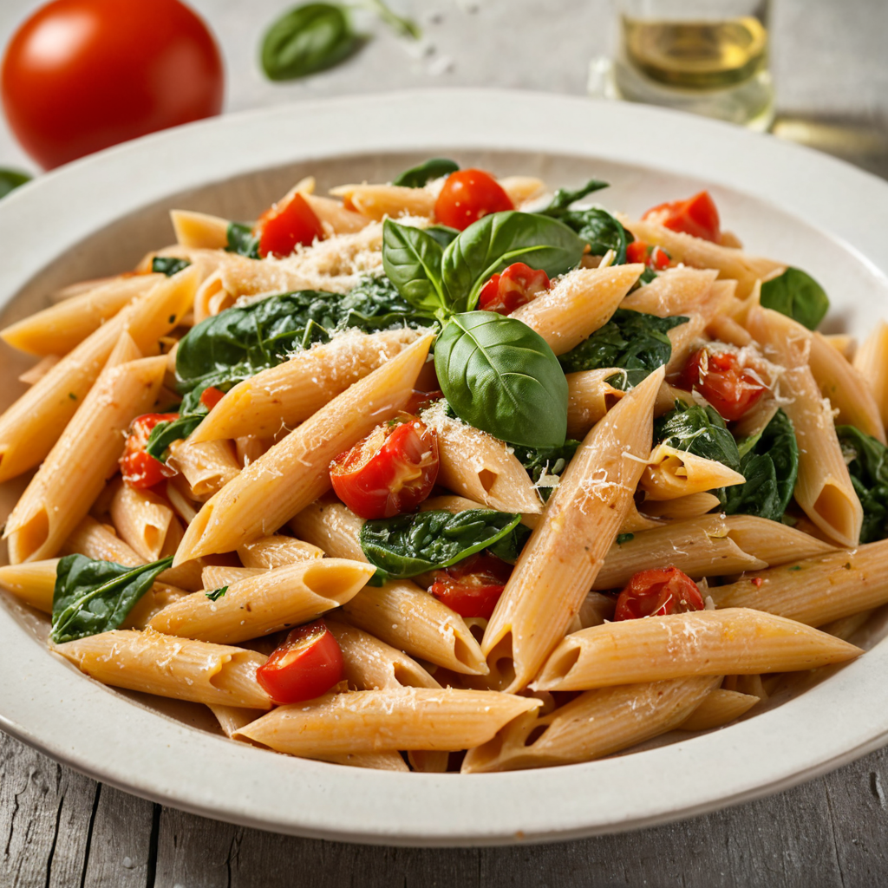

Spenótos-paradicsomos penne recept

Hozzávalók:
- 300 g penne tészta
- 200 g friss spenót
- 400 g paradicsompaszta
- 3 gerezd fokhagyma, apróra vágva
- 1 ek olívaolaj
- 1 tk szárított oregánó
- Friss petrezselyem vagy snidling apróra vágva a tálaláshoz
- Reszelt parmezán sajt a táloláshoz
- só
- bors
Elkészítés:
- Forralj fel bőséges mennyiségű vizet egy nagy lábosban, majd adj hozzá sót és főzd meg benne a pennét a csomagoláson található útmutatás szerint.
- Közben melegíts olívaolajat egy nagy serpenyőben közepes lángon, majd add hozzá az apróra vágott fokhagymát és párold 1-2 percig, amíg illatos lesz.
- Öntsd hozzá a paradicsomkonzervet és az oregánót, majd főzd 8-10 percig, amíg kissé besűrűsödik.
- Add hozzá a friss spenótot a paradicsomszószhoz, és főzd további 2-3 percig, amíg a spenót összeesik.
- Amikor a penne megfőtt, szűrd le, majd keverd össze a spenótos-paradicsomos szósszal.
- Tálald reszelt parmezán sajttal megszórva.